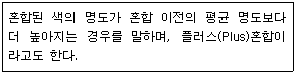
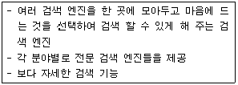
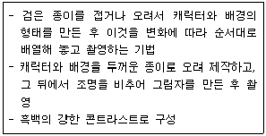

웹디자인기능사 (2011-10-09 기출문제)
1과목: 디자인 일반
1. 눈이 부시지 않고 조도가 균일하며, 그림자가 없는 부드러운 침실이나 병실 등 휴식공간에 사용되는 조명방법은?
- 전반확산조명
- 간접조명
- 직접조명
- 반간접조명
(정답률: 86%)

2. 다음 중 빛의 혼합에 대한 결과로 맞는 것은?
- Green + Cyan = Black
- Green + Blue = Magenta
- Red + Green = Yellow
- Red + Blue = Cyan
(정답률: 81%)
3. 다음 형태(form) 중 반드시 수학적 법칙과 함께 생기며, 가장 뚜렷한 질서를 갖는 것은?
- 유기적 형태
- 기하학적 형태
- 내부적 형태
- 자연적 형태
(정답률: 88%)
4. 부분과 부분 또는 부분과 전체 사이 안정된 관련성을 지니며, 서로 함께 속해있는 것처럼 보이는 디자인의 원리는?
- 비례
- 조화
- 균형
- 강조
(정답률: 81%)
5. 다음 중 색채에 대한 설명으로 틀린 것은?
- 색채는 물체의 지각을 수반하고, 심리적 성질을 갖는다.
- 물체가 발광하지 않고 받아서 반사되는 색이다.
- 색채의 분류는 무채색, 유채색, 중성색 3가지가 있다.
- 우리가 일상생활에서 보는 색을 색채라고 한다.
(정답률: 59%)
6. 다음 중 커뮤니케이션 디자인의 설명으로 틀린 것은?
- 라틴어 ‘Communicare'를 어원으로 한다.
- 두 개 이상의 개체가 기호를 매개로 무언가를 공유하는 것이다.
- 운동과 시선을 중시하는 디자인이다.
- 사람과 사람 사이에 기호에 의해서 의미를 전달하는 과정이다.
(정답률: 89%)
7. 먼셀의 색입체에 대한 설명으로 틀린 것은?
- 색상, 명도, 채도의 3속성 2차원 좌표에서 색 감각으로 보는데 용이하다.
- CIE의 색표와 연관성이 용이하다.
- 실제로 사용하고 있는 모든 물체색이 색입체에 포함되어 있다.
- 모든 색상의 채도 위치가 달라 배색 체계를 응용하기 용이하다.
(정답률: 46%)
8. 다음 중 디자인의 의미에 관한 설명으로 틀린 것은?
- 디자인이란 일반적으로 하나의 그림 또는 모형으로써 그것을 전개시키는 계획 및 설계라고 할 수 있다.
- 디자인 행위란 인간이 좀 더 사용하기 쉽고, 아름답고 쾌적한 생활환경을 창조하는 조형 행위를 말한다.
- 프랑스어의 데생(dessin)과 같은 어원으로 르네상스시대 이후 오랫동안 데생과 같이 가벼운 의미로 사용되었다.
- 1940년대 당시 근대 사상에 입각하여 바우하우스에서 디자인 이념을 세우고 디자인(design)이라는 용어를 처음 사용하였다.
(정답률: 64%)
9. 바우하우스의 설립자이며, 근대 건축과 디자인 운동의 대표적 지도자는?
- 모리스(MORRIS, WILLIAM)
- 그로피우스(GROPIUS, WALTER)
- 로위(ROWEY, RAYMOND)
- 팹스너(PEVSNER, NIKOLAUS)
(정답률: 79%)
10. 시각적으로 안정감을 느끼게 하는 디자인의 원리는?
- 균형
- 불규칙
- 변화
- 비대칭
(정답률: 92%)
11. 디자인의 원리에 대한 설명 중 옳지 않는 것은?
- 통일은 조화로운 형, 색, 질감이 공통된 특징을 갖고 있다.
- 대칭은 균형의 전형적인 구성형식이며 좌우대칭, 방사대칭이 있다.
- 반복은 동일한 요소나 대상 등을 두 개 이상 나열시켜 율동감을 표현하는 것으로 시각적으로 힘의 강약효과가 있다.
- 점이는 일정한 방향을 유지하나 크기와 형태가 다른 경우를 의미한다.
(정답률: 58%)
12. 디자인을 할 때 목적에 합당한 수단을 썼는지에 대한 디자인의 조건은?
- 합목적성
- 독창성
- 심미성
- 경제성
(정답률: 93%)
13. 신비함, 우아함, 고귀함, 신성함, 예술, 창조 등이 연상되는 색은?
- 빨강(赤)
- 자(紫)
- 청(靑)
- 검정(黑)
(정답률: 79%)
14. 윌리암 모리스를 중심으로 일어난 미술공예운동의 배경으로 옳은 것은?
- 기계화와 대량생산으로 인한 생활용품의 품질저하
- 기계화에 의한 장비설치로 생활용품의 가격 폭등
- 기계화로 생활용품에 화려하고 복잡한 장식을 사용할 수 없게 됨
- 대량생산으로 생활용품의 가격 폭락
(정답률: 81%)
15. 배색에 대한 설명으로 틀린 것은?
- 사물의 성능이나 기능에 부합되는 배색을 하여 주변과 어울릴 수 있도록 한다.
- 사용자 성별, 연령을 고려하여 편안한 느낌을 가질 수 있도록 한다.
- 색의 이미지를 통해서 전달하려는 목적이나 기능을 기준으로 배색한다.
- 목적에 관계없이 아름다움을 우선으로 하고 타 제품에 비해 눈에 띄는 색으로 배색하여야 한다.
(정답률: 88%)
16. 다음 중 동화현상이 일어날 수 있는 상황으로 맞는 것은?
- 주위를 둘러싼 면적이 클 때
- 좁은 시야에 복잡한 색채 무늬들로 구성되었을 때
- 서로 인접한 색의 색상차가 클 때
- 빨강과 보라를 나란히 붙여 놓았을 때
(정답률: 50%)
17. 그래픽의 표현 요소 중 회화나 사진을 비롯하여 도형, 도표 등 문자 이외의 시각화된 것을 무엇이라 하는가?
- 일러스트레이션
- 포스터
- 신문광고
- 표지
(정답률: 79%)
18. 디자인의 형식적 요소에 포함되지 않는 것은?
- 형
- 색
- 질감
- 용도
(정답률: 82%)
19. 다음이 설명하고 있는 색의 혼합은?

- 감산 혼합
- 가산 혼합
- 병치 혼합
- 중간 혼합
(정답률: 92%)
20. 배색의 조건에 대한 설명으로 틀린 것은?
- 사물의 용도나 기능에 부합되는 배색을 해야 한다.
- 색이 주는 심리적 효과를 고려해야 한다.
- 인간적인 요인으로 계획자의 개인적 특성에 맞추어 배색 한다.
- 환경적 요인을 충분히 고려하여 배색 한다.
(정답률: 89%)
2과목: 인터넷 일반
21. 소스 코드가 HTML 문서 내에 포함되어 사용자의 브라우저에서 직접 번역되어 수행되는 것은?
- 자바 애플리케이션
- 자바 스크립트
- 자바 시크리트
- 자바 빈즈
(정답률: 92%)
22. 자바스크립트의 Document 객체에 포함되어 있는 객체가 아닌 것은?
- Anchor 객체
- Area 객체
- Link 객체
- Location 객체
(정답률: 47%)
23. HTML의 태그(tag)에 관한 설명으로 옳은 것은?
- 태그는 시작 태그만 필요하다.
- 태그의 이름은 대소문자를 구분하지 않는다.
- 태그를 중첩하여 사용할 수 없다.
- 여러 개의 공백 문자들은 각기 달리 인식된다.
(정답률: 67%)
24. 다음 중 웹브라우저의 기능이 아닌 것은?
- 웹페이지 저장 및 인쇄
- 전자우편 및 뉴스그룹 이용
- 텍스트, 이미지 및 멀티미디어 지원 기능
- 인터넷 응용프로그램 제작 기능
(정답률: 80%)
25. 국제기구를 나타내는 최상위 도메인은?
- mil
- org
- net
- int
(정답률: 44%)
26. 다음 중 LAN이 물리적 통신망 구조가 아닌 것은?
- 성(star)형
- 버스(bus)형
- 십자(cross)형
- 링(ring)형
(정답률: 74%)
27. 전자우편 서비스 헤더 중 숨은 참조자를 나타내는 것은?
- Rcc
- Bcc
- Bc
- Cc
(정답률: 66%)
28. IP 주소는 숫자로 구성되어 있기 때문에 실제로 사용자가 이용하기에는 불편하다. 이를 대신하여 쉽게 기억할 수 있고, 이용하기 편리하도록 만든 것은?
- 파일 이름
- 도메인 이름
- 주소 클래스
- 패킷
(정답률: 86%)
29. Anonymous FTP 사이트를 대상으로 해서 원하는 파일의 위치를 알려 주는 인터넷 서비스는?
- Archie
- Whois
- Finger
- Veronica
(정답률: 51%)
30. 검색엔진과 그에 해당된 서비스가 틀리게 연결된 것은?
- 야후 - 거기
- 옥션 - 메일 및 메신저
- 네이버 - 지식검색
- 네이트 - 보는 검색 체험하기
(정답률: 84%)
31. 범위가 넓지 않은 일정 지역 내에서 다수의 컴퓨터나 OA기기 등을 속도가 빠른 통신선로로 연결하여 기기 간에 통신이 가능하도록 하는 근거리 통신망을 무엇이라 하는가?
- LAN
- MAN
- WAN
- VAN
(정답률: 86%)
32. 다음이 설명하고 있는 웹페이지 검색 엔진은?

- 통합형 검색 방식
- 웹 디렉터리 방식
- 웹 인덱스 방식
- 메타형 검색 방식
(정답률: 49%)
33. 웹 페이지 디자인 시 시각적 요소 중 색상 및 패턴에 관한 설명으로 가장 거리가 먼 것은?
- 주변 상황과 대비되는 색채를 사용함으로써 특정 정보를 강조한다.
- 서로 상이한 정보 간에는 동일한 색상을 사용하여 정보의 성격과 내용에 따라 체계적인 색채 계획을 적용한다.
- 명도와 채도를 갖게 함으로써 다른 색상을 사용하더라도 상호 간에 조화를 이룰 수 있어야 한다.
- 공간과 문화를 초월해 공통점을 갖는 색채의 상징성을 이용하여 전달력을 상승시킬 수 있다.
(정답률: 56%)
34. 인터넷상에 산재해 있는 제반 정보를 미리 수집하고 이를 체계적으로 저장한 후, 사용자가 원하는 정보를 수시로 찾을 수 있도록 해주는 일종의 데이터베이스 관리시스템을 무엇이라 하는가?
- 웹브라우저
- 메일링리스트
- 무료계정
- 검색엔진
(정답률: 71%)
35. 인터넷상의 WWW(월드와이드웹) 콘텐츠를 작성하도록 해주는 언어는?
- IP
- HTTP
- HTML
- URL
(정답률: 59%)
36. 다음 중 자바스크립트의 변수에 대한 설명으로 틀린 것은?
- 데이터의 형을 구분하여 선언하여야 한다.
- 변수명의 첫 문자는 영문자 또는 _로 시작한다.
- 변수명은 영문자의 대문자와 소문자를 구분한다.
- 예약어는 변수명으로 사용할 수 없다.
(정답률: 42%)
37. 인터넷 익스플로러 6.0 인터넷 옵션의 “내용 관리자”부분에 대한 설명으로 옳지 않은 것은?
- 인증서 : 범주에 따른 등급을 조정할 수 있으며 그 등급에 해당하는 홈페이지로 이동할 수 있도록 추가 정보를 제공한다.
- 승인된 사이트 : 등급 지정에 관계없이 항상 볼 수 있거나 볼 수 없는 사이트를 지정할 수 있다.
- 일반 : 사용자 옵션과 감독자 암호를 지정할 수 있는 곳으로, 기본적으로 사용자가 제한된 내용만 보도록 표시되어 있다.
- 고급 : 사용자가 다른 등급 시스템을 적용하려고 할 때 이용된다.
(정답률: 50%)
38. HTML의 문단 구성과 관련된 Tag와 그 용도에 대한 설명으로 옳지 않은 것은?
- <BR> : 줄을 바꿀 때 사용한다.
- <P> : 문단을 바꿀 때 사용한다.
- <MID>...</MID> : 태그 사이에 있는 문단을 가운데로 정렬할 때 사용한다.
- <DIV>...</DIV> : 문서를 구분하여 문단별로 정렬할 때 사용한다.
(정답률: 65%)
39. 자바스크립트의 장점으로 볼 수 없는 것은?
- 컴파일 과정을 거치지 않기 때문에 신속한 개발을 할 수 있다.
- 웹상에서 인터렉티브한 웹페이지를 만드는데 많이 사용된다.
- 어떤 운영체제와 하드웨어에서도 작동하는 이식성이 높은 언어이다.
- 자바스크립트를 이용한 응용 프로그램은 브라우저가 제한하는 기능적 한계를 벗어날 수 있다.
(정답률: 60%)
40. 웹페이지의 외형을 제어하기 위한 언어인 스타일시트(Style Sheet)에 대한 설명 중 적합하지 않은 것은?
- 하나의 문서만 수정해도 한꺼번에 여러 페이지의 외형과 형식을 수정할 수 있다.
- 스타일시트에서 글꼴, 색상, 크기, 정렬 방식 등을 미리 지정하여 필요한 곳에 적용할 수 있다.
- 같은 스타일시트를 사용하는 문서에는 문서들의 일관성을 쉽게 유지할 수 있다.
- 웹페이지의 레이아웃 편집을 강화하여 브라우저나 플랫폼의 종류에 많은 제한이 따른다.
(정답률: 71%)
3과목: 웹그래픽스 디자인
41. 애니메이션에서 사용되는 정지화면 하나하나를 무엇이라 하는가?
- Frame
- Key Frame
- Tweening
- Onion Skin
(정답률: 82%)
42. 웹(Web)상에서 애니메이션 사용을 저해하는 요소가 아닌 것은?
- 데이터 스트리밍
- 대역폭의 한계
- 브라우저가 지원하지 못하는 낮은 사양의 컴퓨터
- 인터넷의 비동기성
(정답률: 53%)
43. 비트맵이미지에서 사용되는 픽셀(Pixel)에 대한 설명으로 옳지 않은 것은?
- 디지털 이미지의 기본단위이다.
- 이미지는 여러 개의 픽셀들로 구성된다.
- 픽셀들은 프레임버퍼(frame buffer)에 저장된다.
- 픽셀 하나의 크기는 0.3514mm이다.
(정답률: 57%)
44. 플래시와 관련된 파일 확장자가 아닌 것은?
- .fla
- .swf
- .spa
(정답률: 76%)
45. 웹 디자인에 대한 설명 중 옳지 않은 것은?
- 레이아웃(Lay-Out) 설계가 매우 중요하다.
- 사용자 인터페이스(Interface)를 고려해야 한다.
- Text 중심의 디자인이 시각적 효과를 높여 준다.
- 멀티미디어 요소는 정보 전달의 효과를 극대화하기도 한다.
(정답률: 81%)
46. 다음 중 HTML에 대한 설명으로 옳지 않은 것은?
- HTML언어는 W3C를 기반으로 한다.
- HTML은 Hyper Text Marking Language의 약자이다.
- 확장자는 html 또는 htm 이다.
- HTML은 태그(Tag)로 구성되어 있다.
(정답률: 57%)
47. 컴퓨터 그래픽스(Computer Graphics)에 대한 정의로 틀린 것은?
- 컴퓨터의 하드웨어와 소프트웨어를 이용하여 도형, 그림, 사진 이미지 등의 시각적 이미지를 만들어 내고 디지털화(Digitalize) 시키는 것이다.
- 컴퓨터 그래픽스는 크게 2D 그래픽스와 3D 그래픽스로 나눌 수 있다.
- 활용 범위가 매우 넓으며, 특히 영화나 영상물 등 의 멀티미디어 분야에서 가장 효과적으로 활용되고 있다.
- 전통적인 회화 방식을 응용하여 결과물을 디지털화 시킨 것은 제외한다.
(정답률: 79%)
48. 축소형으로 입체 모델을 만들고 여기에 다른 기법을 병합하여 환상적인 장면을 만드는 애니메이션 특수 효과는?
- 모핑 효과
- 로토스코핑 효과
- 미니어처 효과
- 페인팅 효과
(정답률: 77%)
49. 웹의 구조적 측면에서 제작된 웹 사이트의 전형적인 웹 탐색구조 설명이 잘못된 것은?
- 선형적 구조는 하나의 홈페이지에서 다음 홈페이지로 또 다음 홈페이지로 연결된 구조로 주제별 검색에 많이 사용된다.
- 계층적 구조는 하나의 홈페이지가 있고 그 홈페이지의 메인(Main)에 다양한 메뉴가 있어 주제어 검색에 많이 활용 된다.
- 복합적 구조는 선형적 구조와 계층적 구조를 혼합한 것으로 단어별 검색에 많이 사용된다.
- 그물형 연결 구조는 단순하고, 개별적인 간결한 구조로 대(큰)주제 검색에 많이 활용된다.
(정답률: 73%)
50. 캠코더에서 얻은 동영상클립을 편집하여 결과물을 얻기에 적합한 소프트웨어가 아닌 것은?
- Premiere
- Movie Maker
- Vegas
- Media Player
(정답률: 73%)
51. 투명 효과를 줄 수 있는 파일 포맷끼리 짝지어진 것은?
- JPG, PNG
- PNG, GIF
- GIF, BMP
- PNG, TIFF
(정답률: 76%)
52. 다음 중 컬러모드에 대한 설명으로 잘못된 것은?
- RGB Color는 화면용 이미지, 홈페이지, CD-ROM 타이틀, 게임 등에 사용한다.
- Index Color는 색의 3속성인 색상, 채도, 명도를 바탕으로 색을 표현하는 방식이다.
- CMYK Color는 인쇄를 통해 제작되는 출판물에 사용한다.
- Gray scale은 흑백 이미지나 원고에 사용된다.
(정답률: 67%)
53. 다음 설명에 해당하는 것은?

- 퍼펫 애니메이션
- 클레이메이션
- 로토스코핑 애니메이션
- 실루엣 애니메이션
(정답률: 85%)
54. 웹에서 사용되는 타이포크래피의 특징에 대한 설명으로 옳지 않은 것은?
- 타이포그래피는 문자의 모양과 배열을 의미하는 것으로 웹과 접목되면 다양한 표현이 가능해진다.
- 웹에서는 서체 사용에 제한이 없다.
- 웹의 타이포를 이용한 인터랙티브한 구성이 가능해 진다.
- 웹의 타이포는 동적이다.
(정답률: 67%)
55. 웹페이지 제작을 도와주는 위지위그(WYSIWYG)프로그램이 아닌 것은?
- 프론트페이지(FrontPage)
- 드림위버(Dreamweaver)
- 나모(Namo Web Editor)
- 피디에프(PDF : Portable Document Format)
(정답률: 80%)
56. 웹디자인 프로세스 중 Pre-Production 단계에 해당되지 않는 것은?
- 이미지 제작
- 디자인 계획 수립
- 콘셉트 구상
- 디자인 구체화
(정답률: 62%)
57. 웹 사이트를 제작하기 위한 이미지 소스를 얻는 과정으로 적절하지 않은 것은?
- 사이트의 콘셉트에 맞추어 디지털 카메라로 사진을 찍는다.
- 타 사이트의 이미지를 복사하여 활용한다.
- 적절한 이미지가 없으면 이미지 판매 사이트에서 구입할 수 있다.
- 이미지 편집 프로그램을 사용하여 직접 이미지를 제작한다.
(정답률: 84%)
58. 컴퓨터그래픽스 시스템에 사용되는 입력장치에 해당 되지 않는 것은?
- 트랙볼(track ball)
- 터치스크린(touch screen)
- 라이트펜(light pen)
- 빔 프로젝터(beam projector)
(정답률: 84%)
59. 로고(Logo)를 제작하기에 적합한 소프트웨어는?
- Flash
- 3D MAX
- DreamWeaver
- Illustrator
(정답률: 88%)
60. 웹사이트에서 효과적인 배너를 제작할 때 고려사항과 가장 거리가 먼 것은?
- 위치가 상단일수록 광고 효과가 크다.
- 가능한 밝고 선명한 색을 일관되게 활용한다.
- 화려하게 파일 용량을 최대한 크게 할수록 좋다.
- 움직임이 있는 경우가 고정형에 비해 클릭율이 높다.
(정답률: 88%)